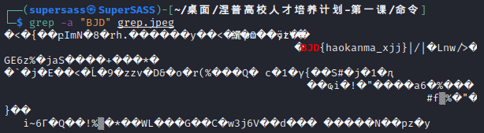
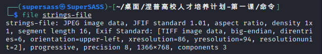
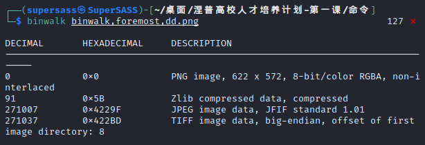
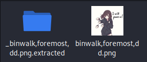
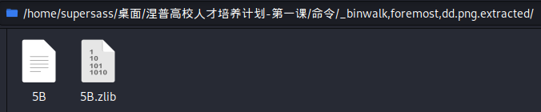

以下为涅普计划的课程笔记，建议搭配课程视频理解。
图片隐写：
将一些不可告人x的东西（如flag）以各种方式隐藏在图片中。
自已需要分析出隐写方法，并找出隐藏的信息。
0x00 课程视频
课程视频
0x01 准备工具
十六进制编辑器
- “010 Editor”
优点：有模板（需要安装）
Tip: 复制16进制的快捷键为Ctrl+Shift+C。 - “WinHex”
其实也称二进制编辑器，因为文件都是以bin二进制来存储的，不过为了阅读方便，将8位2进制串转化为2位16($2^4=16$)进制串。
虚拟机——“Kail”
相关命令
-
strings
打印文件中可打印的字符。
作用：可找出图片中隐写的字符串。例子
在终端中输入strings strings.jpg后

可以看见"Nepnep{welcome}“和"print(hell oworld)“这两条信息。 -
grep
用于查找内容包含指定的范本样式的文件，如果发现某文件的内容符合所指定的范本样式，预设grep指令会把含有范本样式的那一列显示出来。输入
grep -a "flag" xxx.jpg
则会把文件中含"flag"字符串部分前后显示出来。例子
如图：

可以看见"BJD{haokanma_xjj}“这个flag。 -
file
用于辨识文件类型。
可以显示文件的格式，属性等信息。例子
对"strings-file"这个无后缀名文件进行分析。

可以看见文件的基本信息，为JPEG文件。Tip: JPEG和JPG是同一个格式。
-
binwalk
用于搜索给定二进制镜像文件以获取嵌入的文件和代码的工具，即可以查看文件中含有的其他文件。
在CTF中binwalk常用于分析隐藏文件。
参数：-e分离出文件到新文件夹中（但可能不全）。
例子
输入
binwalk xxx.png
输入
binwalk -e xxx.png得到新文件夹，里面有提取出的文件。
  -
foremost
注意：需要使用apt-get install foremost安装。
也可以提取文件（也不一定能提取所有文件）。
比较于binwalk，binwalk更加强大，速度也快。但是有时候如果不能分离出来，就可以试试看foremost。例子
输入
foremost xxx.png后，得到output文件夹，其中目录树如图。
其中png文件夹中为原图片，而jpg文件夹中则为分离处的新图片。
audit.txt则为所分离文件的信息。 -
dd搭配binwalk分析后，指定提取文件。命令为
dd if=xxx.png of=out.jpg bs=1 skip=***参数解释：
if=xxx.png为要分离的文件名。of=out.jpg为输出的文件名。bs=1为每次读取几个块（一般为1）。skip=***为从哪里开始读入（搭配binwalk分析后确定）。
如上面输入binwalk命令后，可得知内含的JPEG文件从271007开始，则此处skip=271007。
0x02 知识点
文件头文件尾
每个文件格式有相应的文件头和文件尾，可通过十六进制编辑器查看。
e.g.
.jpg：开头——FF D8，结尾——FF D9。
重点：超过文件尾的部分不会被读取。
文件模板
以十六进制查看方式打开后，若存在对应模板，
则会将整个十六进制划分成一个个部分，每部分会有各自的作用。
可根据模板的划分，快速确定某一部分十六进制代表什么意思，有什么作用，储存什么信息等。
如图：

可见通过PNG文件模板将十六进制分为了许多部分。
最常用的信息如告知图片长宽、属性。
文件属性
就是文件的属性【？……
点击右键属性，可查看文件的一定属性信息。
如图：

0x03 图片隐写分类

1. 属性隐写
【就单纯在文件属性（标题、作者等）中写东西，很少用……
2. 16进制隐写
一般在文件的16进制格式中增添或修改，达到隐写字符串的目的。
常见形式：
- 在文件尾后直接隐写内容。
- 原理：文件不会读取超过文件尾的部分。
e.g.

16进制隐写 - 文件尾
可以发现文件尾后还有niconiconi这个字符串。 - 在中间部分隐写内容。
- 原理：有些时候在中间处修改添加内容，是不会或略微影响文件正常读取的，从而达到隐写的效果。
- 判断方法：图片可能会有所怪异，如中间有条线。
e.g.

16进制隐写 - 例题
可以发现黑丝【？】那有明显的一条线。
对应方法：使用Linux命令中的strings或grep。
使用例见上方虚拟机——“Kail"的命令部分
不给出文件后缀名，不能直接判断出这个文件是什么格式。
可以通过16进制编辑器，查看对应的文件头，从而找出是什么格式。
3. 文件包含
隐写的内容可能为简单的字符串，也可能为若干个新的文件。
解决方法：
- 通过Linux命令
binwalk来分析或binwalk -a尝试分离。 - 通过Linux命令
foremost来尝试分离。 - 通过Linux命令
dd来尝试分离。
以上三种命令的使用例见上方虚拟机——“Kail"的命令部分。
- 直接以16进制编辑器"010 Editor”，将所隐藏的文件16进制部分写入到一个新的文件后并打开。
4. 文件头修改隐写
将文件头修改或删除，文件将不能读取。
但破坏文件尾可能不会影响读取。
需要通过16进制编辑器查看文件头尾部分，分析出该有的文件头。
5. gif
特殊帧
隐藏在帧中的信息。
e.g.

gif - 特殊帧
【需要点击图片才能查看动图】
可以明显看见图中会闪过一些东西。
一般选择逐帧分析的方法。
【当然可以选择用手速来截图查看【b站视频闪过图片的常用方法x……
逐帧分析工具：
- PhotoShop
会将每帧分为一层图层，即可查看。 - Stegsolve.jar
打开图片后，点击"Analyse"中的"Frame Browser"也可以逐帧查看。 - Ulead GIF
帧的时间间隔
信息也可能隐藏在帧时间间隔中。
e.g.
很多帧都是$0.1$s，但某几帧是$0.2$s，就很有问题.jpg……
采用"Ulead GIF"来查看帧时间间隔。
6. png(bmp)
长高修改(IHDR)
可能通过修改宽高，隐藏了某些信息，
通过16进制编辑器来修改查看。
其中宽高信息则在模板中IHDR部分里可查看。
一般是修改高，因为修改宽会导致不能正常显示。
并且修改得大一点更好，避免重复修改。
e.g.

长高修改 - 修改高

长高修改 - 发现隐写信息
将该图片的高增大后，则可发现隐藏信息。
判断是否高被修改的方法：
-
通过检验CRC32确定。 当用"010 Editor"打开图片后，若输出窗口中会报错，显示CRC32有问题，证明这张图片的属性（如本类中的高）被篡改过。
e.g.

CRC32错误显示 也可以手动计算校验和来比对。
手动计算方法
- 先选中IHDR到crc之前的部分。

对应模板中的"union CTYPE type"和"struct PNG_CHUNK_IHDR_ihdr"两个部分。

- 然后点击“工具”中的“校验和”，选择“CRC-32”。

- 得到计算结果后与crc部分比对即可。


注意文件中的检验和是1FCF9E8E，没有那个h。
- 先选中IHDR到crc之前的部分。
-
脚本爆破来得到真实高度。
就是暴力的意思，不断修改高度并比对校验和，如果一致则为正确高度。
爆破python代码：import os import binascii import struct misc = open("***.png","rb").read() # 请在这里填写要爆破的文件名 # 爆破高 crc32_bytes = misc[0x1d:0x20 + 1] # 文件IHDR块的crc32的bytes crc32_hex_eval = eval('0x' + crc32_bytes.hex()) # 将crc32的bytes串 -> hex串 -> 值 for i in range(4096): data = misc[0x0c:0x0f + 1] + misc[0x10:0x13 +1 ] + struct.pack('>i', i) + misc[0x18:0x1c + 1] # 爆破IHDR数据 crc32 = binascii.crc32(data) & 0xffffffff # 计算当前crc32 if crc32 == crc32_hex_eval : print("height:", i) print("height_hex: " + hex(i))
数据块IDAT修改
本来IDAT数据块是写满当前块后再换下一个块，
但用"010 Editor"查看后发现有IDAT块有异常（不满足上述规律），故这个数据块可能藏有信息。
检测方法：
- 使用
pngcheck.exe来查看IDAT数据块情况。e.g.
输入pngcheck.exe -v ***.png后，

pngcheck
发现最后部分有异常。
将该数据块十六进制提取出来后，用脚本或其他方法得到信息。
得到信息方法：
- “010 Editor” + “zlib.py”
用010查看后得到异常部分的16进制，复制后放入脚本运行可得到信息。

zlib得到信息 - 用
binwalk -e提取，直接得到信息。
binwalk得到信息
lsb隐写
为贝塔姐姐强调的部分。
接下来我们讲一个大头er~
又称“最低有效位隐写”。
将隐写内容转换为2进制，整合修改到图片2进制形式的最低位，使得颜色被修改程度极小，肉眼无法分辨。
但可以通过某些命令或脚本来分辨出。
不带密匙
-
通过"Stegsolve.jar"分析。
用"Analyse"的"Data Extract”，一个个选项测试得到文本串或者新的文件。可参考"cat47"的文章stegsolve使用方法。
-
zsteg（很好用）
使用命令zsteg xxx.png来查看各种方式下的文本串或者文件（如果这个命令中没有发现，则可以用zsteg -a xxx.png），
然后用命令zsteg -e ...(分析的通道) > ***.xxx得到文件e.g.
对某图片使用命令zsteg lsb.png后，

zsteg - 分析
发现b1,rgb,lsb,xy这个方式存在一个PNG文件。
则使用命令zsteg -e b1,rgb,lsb,xy > ans.png得到文件。

zsteg - 提取 可参考"β-AS"姐姐的文章隐写工具zsteg安装+使用教程。
带密匙
带密钥的可以用"cloacked-pixel"脚本。
该脚本为python2环境，并且需要numpy、matplotlib、Pillow、pycrypto库的支持。
由于为过气python2环境（且并无python3版本），所需配置较为复杂，所有注意事项已写在下方折叠栏中。
cloacked-pixel脚本的各种注意事项
同时安装python2和python3方法：
python2库本地安装方式：
感觉pip2现在好像不能在线安装库了【？……
所以只能在pypi中将库下载到本地安装。
选择合适的版本，下载到本地。
下载完成后在cmd中，输入pip2 install ...(本地路径)。
路径快速输入方法：输入pip2 install后，将文件直接拖入cmd窗口中即可。
即可成功安装。
参考自文章Python2.7本地安装numpy包
上述库的下载地址：
以下库为个人挨个查询并对应版本后下载，均为Python2.7所能支持的最新版本，可直接下载后按上述安装方法安装。
- numpy
- six
- cycle（需要先安装six）
- pytz
- kiwisolver
- python-dateutil
- backports.functools-lru-cache
- pyparsing
- matplotlib（需要先安装cycle、pytz、kiwisolver、python-dateutil、backports.functools-lru-cache、pyparsing）
- Pillow
- pycrypto（安装方法有所不同，请见python2.7 安装pycrypto库中“下载压缩包解压到本地”部分）
同时安装时还需要"vcvarsall.bat"，方法为两步：-
按照完美解决“Unable to find vcvarsall.bat”错误中配置注册表。
【其中路径为C:\Users\SuperSASSw\AppData\Local\Programs\Common\Microsoft\Visual C++ for Python\9.0】不确定是否还需要配置环境变量（个人为配置了的），如果仍有问题，请点击开始菜单中的"Microsoft Visual C++ Compiler Package for Python 2.7"这个文件夹中，自己对应平台的"Visual C++ 2008 xx-bit Command Prompt"这个快捷方式。
以下折叠部分为安装crypto库所需库，但安装这个后发现不对（有个Random不存在orz……），
查询后发现为上面那个"pycrypto"库。
crypto所需库
){kind=link}
【弄了我好久啊这些库qwqqq太累了……
命令：
python2 lsb.py extract ***.png *** KEY
***.png为源文件名。***为输出文件名。（由于不确定什么格式，可以先不加扩展名，用010查看后再加上对应扩展名）KEY为密匙。
e.g.
输入命令python2 lsb.py extract lsb（123456）.png ans 123456

带密匙的lsb - 使用脚本后结果
打开ans后，发现直接为flag。

带密匙的lsb - 打开ans文件
bmp
用"wbStego4.3open"工具对bmp或pdf等格式文件进行加密解密。
e.g.
打开工具，按照步骤来执行就可以得到文件了。

wbStego4.3open - 步骤2 选择方式 
wbStego4.3open - 步骤3 选择文件及类型

wbStego4.3open - 步骤4 输入密匙 
wbStego4.3open - 步骤5 输入输出文件名

wbStego4.3open - 结果
Tip: 这个软件不能直接关闭，需要用任务管理器结束orz……
0x04 写在最后
以上大部分为个人总结，由于这里也刚入门，很多地方可能存在错误。如发现错误请及时指出，谢谢！……
由于目前博客不支持附件上传下载，所以如果需要上述中的文件，可以联系我分享文件【联系方式在关于页面中有……
如对以上内容存在疑惑不解的地方，也可以询问我。如果我了解的话会尽力解答；不了解的话可以一起努力弄明白hhh……
剩余部分因为时间原因没有继续讲啦_(:з」∠)_……
看好久有时间自学一下【？……
再次感谢贝塔小姐姐的详细讲解！【第一节课真的很不容易的……
之前没有接触过CTF，不过了解后对其兴趣很高……
希望经过这次涅普计划的系统学习能有很大的收获吧√……
以上……